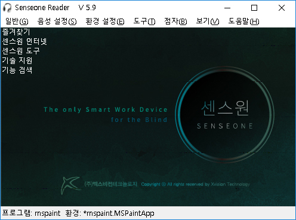

1. 센스리더 더 넥스트 소개

센스리더 더 넥스트는 OCR(Optical Character Recognition)기능을 탑재하여 지금까지는 시각장애인 단독으로 확인할 수 없었던 컴퓨터 상의 각종 정보들을 확인하게 되므로써 정보접근성을 향상시키고 독립적인 컴퓨팅 환경을 구현하게 되었습니다.
이제 센스리더 더 넥스트와 함께 더 많은 정보를 얻고, 다양한 소프트웨어를 체험해 보시기 바랍니다.
센스리더 더 넥스트의 특장점
- 센스리더 더 넥스트를 이용하면 타인의 도움 없이도 화면 정보를 확인할 수 있어 문제 해결에 더욱 능동적인 대처가 가능 함.
- 접근성이 부족한 응용프로그램의 화면을 인식하여 음성으로 출력하고 사용자가 제어할 수 있게 되므로써 자체접근성 구현.
- 이미지로된 문서나 도서류등을 바로 음성으로 듣거나 문서파일로 저장하여 보관할 수 있음.
- 스캐너를 활용하여 이미지 파일을 생성하면 스캔과 동시에 내용을 음성으로 확인할 수 있음.
- 인터넷에 제공된 이미지에 즉시 레이블을 지정하여 음성으로 출력하고 정보를 저장하므로써 동일한 페이지 접근시 사용성을 극대화.
2. 센스원 리더 소개

센스원 리더는 센스리더 더 넥스트의 기능을 동일하게 제공하며, 센스원 리더만의 기능이 부여 됩니다.
다만 센스원 리더는 시각장애인 올인원 디바이스인 센스원에서만 동작하며 다른 디바이스에서는 사용이 불가능 합니다.
센스원 리더의 특장점
- 센스리더 더 넥스트의 모든 기능이 동일하게 제공되어 기존 사용자들이 친숙하게 이용 가능.
- 웹 사이트 뿐만 아니라 자주 사용하는 응용프로그램의 즐겨찾기 기능 지원.
- 자체 개발한 원격 서비스 지원으로 능동적인 대처 가능.
- 센스원 리더의 환경을 전용 서버에 백업하여 언제든 다시 복원할 수 있는 클라우드 기능 지원.